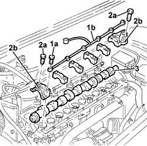
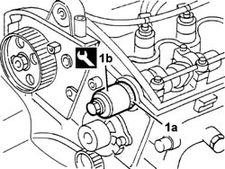

1036B10 CAMSHAFT in cylinder head - R.R. on vehicle
- Path
- Procedures > 10 ENGINE > 1036 TIIMING SYSTEM > 1036B CAMSHAFT (1) IN CYLINDER HEAD (1) > 1036B10 CAMSHAFT in cylinder head - R.R. on vehicle
- Kind
- repair procedure (removal / refitting; the operation number is the code)
- Applies to
- engines: 2.4 JTD 10V; all production periods
- Interactive page
- https://sloeber94.github.io/elrnDB-lThss/en/#/98692
Applies to: engines: 2.4 JTD 10V; all production periods
 Removing
Removing
 Refitting
RefittingSee in Op. 7040D50 ENGINE COMPARTMENT UPPER SOUND INSULATION SHIELD - R.R.
See in Op. 1016A10 SOUND-PROOFING COVER - R.R.
See in Op. 7055B54 PROTECTION/GUARD under engine - R.R.
See in Op. 4450B04 Right FRONT WHEEL (one) - R.R.
See in Op. 7055B42 FRONT WHEEL ARCH LINER (one), left or right - R.R.
See in Op. 7055B64 Engine compartment DUST SEAL in front wheel arch (one), left or right - R.R.
See in Op. 1092G10 Engine components single drive BELT - R.R.
See in Op. 1032D12 Timing system protective COVER(S) - R.R.
See in Op. 1032B10 TOOTHED timing BELT - R.R. for timing adjustment or replacement
See in Op. 1032B40 TOOTHED DRIVEN PULLEY (one) - R.R. with timing belt removed
See in Op. 3330D30 vacuum pump - r+r
See in Op. 1016A20 Single TAPPET COVER - R.R. and Replace gasket
1. Undo the fixing bolt (1a) and remove the camshaft bearings lubrication pipe (1b).
2. Undo the bolts (2a) and remove the camshaft caps (2b).
3. Remove the camshaft (3a) complete with oil seal (3b).

Applies to: engines: 2.4 JTD 10V; all production periods
Refitting
Removing- Fit the camshaft in the cylinder head.
- Tighten the bolts fixing the caps.
- Position the lubrication pipe and fasten it tightening the fixing bolts.
- Tighten the bolts fixing the caps to torque.
 | Value - daNm | Fastening | Component | Ø |
|---|---|---|---|---|
. | 1.5 | Bolt | CAMSHAFT CAPS | M7 |
1. Introduce the new oil seal (1b) into the camshaft using the tool (1a).
 | Description | Code | Function |
|---|---|---|---|
1a | Fitting tool | 1.860.824.000 | Tool for fitting crankshaft front oil seals |

Applies to: engines: 2.4 JTD 10V; all production periods
See in Op. 1016A20 Single TAPPET COVER - R.R. and Replace gasket
See in Op. 3330D30 vacuum pump - r+r
See in Op. 1032B40 TOOTHED DRIVEN PULLEY (one) - R.R. with timing belt removed
See in Op. 1032B10 TOOTHED timing BELT - R.R. for timing adjustment or replacement
See in Op. 1032D12 Timing system protective COVER(S) - R.R.
See in Op. 1092G10 Engine components single drive BELT - R.R.
See in Op. 7055B64 Engine compartment DUST SEAL in front wheel arch (one), left or right - R.R.
See in Op. 7055B42 FRONT WHEEL ARCH LINER (one), left or right - R.R.
See in Op. 4450B04 Right FRONT WHEEL (one) - R.R.
See in Op. 7055B54 PROTECTION/GUARD under engine - R.R.
See in Op. 1016A10 SOUND-PROOFING COVER - R.R.
See in Op. 7040D50 ENGINE COMPARTMENT UPPER SOUND INSULATION SHIELD - R.R.
Topics linked from this page (12)
- 1016A10 SOUND-PROOFING COVER - R.R.
- 1016A20 Single TAPPET COVER - R.R. and Replace gasket
- 1032B10 TOOTHED timing BELT - R.R. for timing adjustment or replacement
- 1032B40 TOOTHED DRIVEN PULLEY (one) - R.R. with timing belt removed
- 1032D12 Timing system protective COVER(S) - R.R.
- 1092G10 Engine components single drive BELT - R.R.
- 3330D30 vacuum pump - r+r
- 4450B04 Right FRONT WHEEL (one) - R.R.
- 7040D50 ENGINE COMPARTMENT UPPER SOUND INSULATION SHIELD - R.R.
- 7055B42 FRONT WHEEL ARCH LINER (one), left or right - R.R.
- 7055B54 PROTECTION/GUARD under engine - R.R.
- 7055B64 Engine compartment DUST SEAL in front wheel arch (one), left or right - R.R.